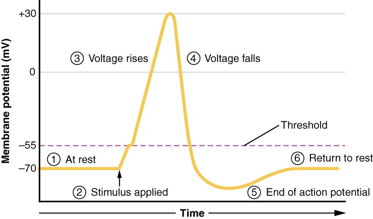

Electrical signals: graded potentials and action potentials
1Why this matters
Jamal, 24, gets a lidocaine injection before a filling. Ten minutes later his lower lip feels thick and numb, and he cannot feel the drill. The nerve endings in his tooth still respond to the drill's pressure. The message just never leaves them: lidocaine blocks the channels his nerve fibers need to send an electrical message toward his brain.
2What this builds on
3Quick check before you start
1. A typical neuron's resting membrane potential is about:
- −70 mV
- 0 mV
- +30 mV
Show the answer
At rest the inside of a typical neuron is about 70 mV negative compared with the outside, set mainly by potassium leaking out.
- Correct: −70 mV:
- 0 mV:
- +30 mV:
2. The membrane potential moves from −70 mV to −60 mV. This is:
- Hyperpolarization
- Depolarization
- Repolarization
Show the answer
Any change to less negative than rest is a depolarization, even if the inside is still negative.
- Hyperpolarization:
- Correct: Depolarization:
- Repolarization:
3. A voltage-gated channel opens in response to:
- A change in membrane potential
- A molecule binding to it
- Stretching or pressure on the membrane
Show the answer
Voltage-gated channels respond to changes in the voltage across the membrane. Ligand-gated channels respond to binding, and mechanically gated channels respond to physical force.
- Correct: A change in membrane potential:
- A molecule binding to it:
- Stretching or pressure on the membrane:
4Anatomy

With labels hidden, select a box to reveal its label.
5How it works, step by step
- A stimulus opens mechanically gated, ligand-gated or other channels, and positive ions enter.A graded depolarization occurs, sized to the stimulus.
- The graded depolarization reaches threshold, about −55 mV.Enough voltage-gated sodium channels open that sodium entry outpaces potassium exit.
- Sodium rushes in, and each bit of depolarization opens more sodium channels.The membrane depolarizes rapidly to about +30 mV.
- The sodium channels close on their own, and the slower voltage-gated potassium channels open.Potassium flows out, and the membrane repolarizes; the slow-closing potassium channels cause a brief hyperpolarization.
- Positive charge from the firing patch spreads along the inside of the membrane to the next patch.The next patch reaches threshold and fires its own action potential, while the patch behind is refractory: the action potential propagates forward at full size.
6Core concepts
7A common mistake
The wrong idea: A stronger stimulus produces a bigger action potential.
What actually happens: Action potentials are all-or-none. Once threshold is reached, the full action potential happens, always to about the same peak. A stronger stimulus makes a bigger graded potential, and that produces action potentials more often (more per second), each one the same size. Size varies only in graded potentials.
8Check yourself
Anything you miss goes into your review queue.
1. A stimulus depolarizes a neuron's membrane from −70 mV to −60 mV. Threshold is −55 mV. What happens next?
- A small action potential that peaks below +30 mV
- A full action potential, delayed slightly
- The depolarization fades and the membrane returns to about −70 mV
- The membrane stays at −60 mV until another stimulus arrives
Show the answer
Below threshold, the few sodium channels that open cannot outpace potassium leaving, so the self-reinforcing cycle never starts. The graded potential fades and the membrane returns to about −70 mV.
- A small action potential that peaks below +30 mV: There is no small action potential. Action potentials are all-or-none.
- A full action potential, delayed slightly: No action potential occurs at all if threshold is not reached, delayed or otherwise.
- Correct: The depolarization fades and the membrane returns to about −70 mV: Correct. A subthreshold depolarization is a graded potential that dies away.
- The membrane stays at −60 mV until another stimulus arrives: Graded potentials are short-lived. Potassium leak pulls the membrane back to rest once the stimulus ends.
2. Jamal gets a lidocaine injection before a filling. Lidocaine blocks voltage-gated sodium channels in the nerve fibers of his lip and tooth. Why can he no longer feel the drill?
- His nerve fibers can no longer produce action potentials
- His nerve fibers' resting potential drops to −90 mV
- His nerve endings no longer produce graded potentials
- His nerve fibers become permanently refractory
Show the answer
The rapid depolarization of an action potential depends on voltage-gated sodium channels. With them blocked, a depolarization can reach threshold values but no action potential follows, so no message travels to his brain.
- Correct: His nerve fibers can no longer produce action potentials: Correct. No sodium channels, no action potential, so nothing carries the message along the fiber.
- His nerve fibers' resting potential drops to −90 mV: The resting potential is set by leak channels, which lidocaine does not block. It stays near −70 mV.
- His nerve endings no longer produce graded potentials: Graded potentials at the nerve endings come from other channels, such as mechanically gated ones, and still occur. They just cannot be turned into action potentials.
- His nerve fibers become permanently refractory: Refractoriness follows an action potential and lasts milliseconds. Here, the drug prevents action potentials altogether, and the effect wears off as the drug is cleared.
3. Level 2. A toxin blocks the voltage-gated sodium channels in a nerve fiber. A stimulus is applied to the fiber's nerve ending. Predict each variable compared with before the toxin.
| Variable | Change |
|---|---|
| Resting membrane potential | — |
| Graded potential at the nerve ending | — |
| Number of action potentials along the fiber | — |
| Peak voltage reached along the fiber | — |
Show the answer
Blocking voltage-gated sodium channels leaves rest and graded potentials intact but abolishes action potentials, so nothing travels along the fiber.
- Resting membrane potential: no change. Rest is set by leak channels and the ion gradients, which the toxin does not touch.
- Graded potential at the nerve ending: no change. The stimulus still opens its own channels at the ending, so the graded potential is the same size.
- Number of action potentials along the fiber: down. Without voltage-gated sodium channels, reaching threshold cannot start the self-reinforcing sodium entry, so no action potentials occur.
- Peak voltage reached along the fiber: down. With no sodium rush, the membrane never swings to +30 mV; it only shows fading graded changes.
4. One step in this account of an action potential is wrong. Find it.
- The membrane is depolarized to threshold
- Voltage-gated sodium channels open, and sodium enters
- The membrane reaches about +30 mV
- The sodium–potassium pump then repolarizes the membrane
- Slow-closing potassium channels cause a brief hyperpolarization
Show the answer
Repolarization comes from potassium flowing out through voltage-gated potassium channels, after the sodium channels close on their own. The pump is far too slow to do this, and so few ions move in one action potential that the pump need not act at once.
- The membrane is depolarized to threshold: This is right: an action potential starts when the membrane reaches threshold.
- Voltage-gated sodium channels open, and sodium enters: This is right: sodium entry drives the rapid depolarization.
- The membrane reaches about +30 mV: This is right: the peak is about +30 mV in a typical neuron.
- Correct: The sodium–potassium pump then repolarizes the membrane: This is the error. Potassium leaving through voltage-gated channels repolarizes the membrane; the pump only keeps the gradients steady over time.
- Slow-closing potassium channels cause a brief hyperpolarization: This is right: extra potassium leaves while those channels close, so the membrane dips below rest.
5. This graph shows several depolarizing bumps of different sizes, and several hyperpolarizing dips. What does the graph show about graded potentials?
- Only those reaching threshold trigger an action potential
- They are all-or-none, just like action potentials
- The hyperpolarizing dips bring the membrane closer to threshold
- Longer stimuli trigger action potentials whatever their size
Show the answer
The bumps grow with stimulus size, which is what graded means. An action potential starts only when a depolarization reaches the threshold line.
- Correct: Only those reaching threshold trigger an action potential: Correct. The bumps vary in size, which is what graded means, and threshold is the gate to an action potential.
- They are all-or-none, just like action potentials: The bumps come in several sizes, so they are not all-or-none. Only action potentials are.
- The hyperpolarizing dips bring the membrane closer to threshold: Threshold lies above rest, so dips below rest move the membrane farther from it.
- Longer stimuli trigger action potentials whatever their size: The wider bump on the graph lasts longer but stays below threshold. Duration alone does not start an action potential; reaching threshold does.
6. An action potential starts in the middle of an axon in a lab dish. Charge spreads in both directions from the firing patch. Why does an action potential in a living neuron, which starts near the cell body, travel only toward the axon terminals?
- The patch just behind it has just fired and is refractory
- Axons have sodium channels only on the side facing the terminals
- Positive charge spreads in only one direction inside an axon
- The axon terminals attract positive ions
Show the answer
Charge spreads both ways, but the patch behind has just fired: its sodium channels have closed on their own and cannot reopen yet. Only the patch ahead can reach threshold and fire.
- Correct: The patch just behind it has just fired and is refractory: Correct. The refractory period of the patch behind makes propagation one-way.
- Axons have sodium channels only on the side facing the terminals: Voltage-gated sodium channels are spread along the axon. Their state, not their position, prevents backward firing.
- Positive charge spreads in only one direction inside an axon: Charge spreads both ways from the firing patch. The lab-dish example shows this: started in the middle, the action potential travels in both directions.
- The axon terminals attract positive ions: The terminals do not pull ions toward themselves. Propagation is driven by each patch firing in turn.
7. A drug keeps the voltage-gated potassium channels of a neuron from opening. Sodium channels work normally. How does the neuron's action potential change?
- It never reaches threshold
- Its peak rises far above +60 mV
- It shows a deeper dip below rest
- It returns to rest more slowly
Show the answer
Sodium channels still open and close on their own, so the rise is normal. But the fast exit of potassium that drives repolarization is gone; only the slower leak channels bring the membrane back, so repolarization takes longer.
- It never reaches threshold: Threshold and the rise depend on sodium channels, which work normally.
- Its peak rises far above +60 mV: Sodium entry cannot drive the membrane past sodium's equilibrium potential, about +60 mV.
- It shows a deeper dip below rest: The dip below rest is caused by voltage-gated potassium channels that are slow to close. With them blocked, the dip is smaller, not deeper.
- Correct: It returns to rest more slowly: Correct. Without voltage-gated potassium channels, repolarization relies on leak channels and is slow.
9Summary
Excitable cells, mainly neurons and muscle fibers, can produce action potentials because they have voltage-gated sodium and potassium channels. A graded potential is a small, local change sized to the stimulus; it can depolarize or hyperpolarize, and it fades with distance. If a depolarization reaches threshold (about −55 mV), sodium channels open in a self-reinforcing cycle and an all-or-none action potential follows: sodium in (to about +30 mV), then potassium out (repolarization), then a brief hyperpolarization. The refractory period, caused by sodium channels that cannot reopen right away, limits firing rate and keeps propagation one-way. Each patch of membrane regenerates the action potential, so it arrives at full size.